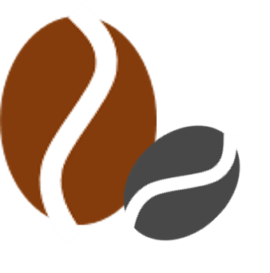

How long does it take to make a cup of coffee?
I guess you would say: "A couple of minutes at my local coffee house." What if I told you it takes about a year from a blossoming coffee tree until you have your roasted coffee beans in the coffee machine to brew your coffee. Making coffee is a lengthy process:
- growing the actual tree... up to 6 years
- flowering, seed growth, and maturation... up to 10 months
- harvesting and drying the seeds... up to a month or two
- shipping / storage
- roasting... about 15-20 min
- brewing... 5 mins tops
Coffee development is a complex and fascinating journey that starts with the cultivation of coffee beans and encompasses various stages until it reaches your cup. It begins on coffee farms around the world, where coffee cherries are carefully grown, harvested, and processed. After harvesting, the beans undergo a series of steps, including drying, milling, and roasting, which greatly influence the coffee's flavor and aroma. Coffee development also involves blending and brewing methods, with baristas and coffee enthusiasts continuously experimenting to create the perfect cup. This intricate process, influenced by geography, climate, and human expertise, contributes to the rich and diverse world of coffee that we enjoy today.

From Flower to Seed
It is a long way from a blossoming coffee flower to the ripe fruit. Over ten months, the seed undergoes multiple changes to develop the basis for the roasted coffee flavors we love so much. This remarkable journey begins with the delicate white flowers that adorn coffee trees, giving way to green, unripe cherries. As the months pass, these cherries slowly transition to a vibrant red or yellow hue, signifying their ripeness. The crucial moment arrives when skilled hands pick these ripe cherries, ensuring that only the finest are selected.

Following harvest, the cherries undergo meticulous processing, which can involve methods like wet or dry fermentation to remove the pulp and reveal the precious coffee beans inside. Once extracted, these beans are dried and hulled, ready to embark on their voyage through the roasting process, where they transform into the aromatic and flavorful coffee beans cherished by coffee connoisseurs worldwide. This journey from flower to ripe seed is a testament to the intricate and artful development of coffee.
If you are interested to see what happens chemically when something goes wrong. Click here and you will be able to see through the eyes of MRI and chemical imaging...